高尾山
| 日付 | 2014年7月21日（月） |
|---|---|
| 山域 | 高尾周辺 |
| メンバー | 家族（妻、長女・3歳、長男・1歳） |
| 山行形態 | 子連れ日帰り |
| アクセス | 車 |
| ルート (Map) | 高尾山薬王院祈祷殿駐車場 (7:44) - (8:46) 稲荷山 - (9:47) 高尾山 (10:35) - 4号路 - (11:49) 琵琶滝 - (12:45) 高尾山薬王院祈祷殿駐車場 |
海の日3連休がやってきたが、例年通り天気予報は芳しくない。
しかし、長い間山に行ってないため、夏山に備えて
そろそろ体力づくりをしておきたいところだ。
連休前半は雷雨だったが、最終日は何とか天気がもちそうなので、
近場の山に登ることにする。
行先はいつも通り、「困った時の高尾山」だ。
いつも通り、高尾山薬王院祈祷殿駐車場に車を停める。標高190m。
連休最終日で、天気も悪いので、中央道は比較的すいていた。
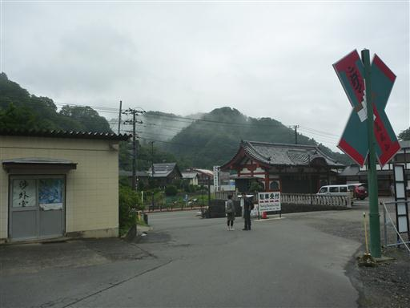
歩きなれた道を進む。
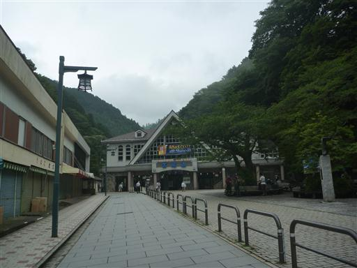
今回は稲荷山コースを登ることにする。前回は下りに使った道だ。
下山はケーブルカーの山頂駅を経由することで、突然の雨に備える予定だ。
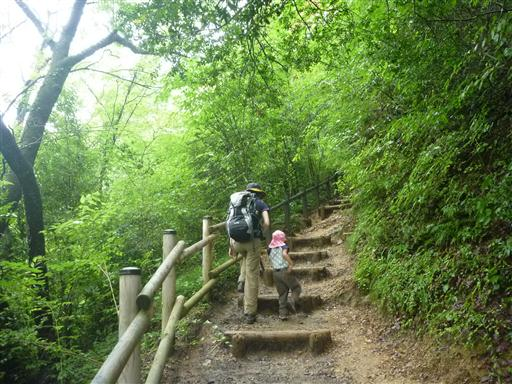
道端に大きなヤマユリが咲いている。
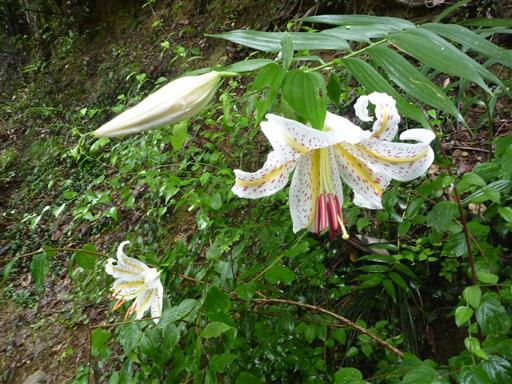
ここからは展望が広がるのだが、空はどんよりしている。
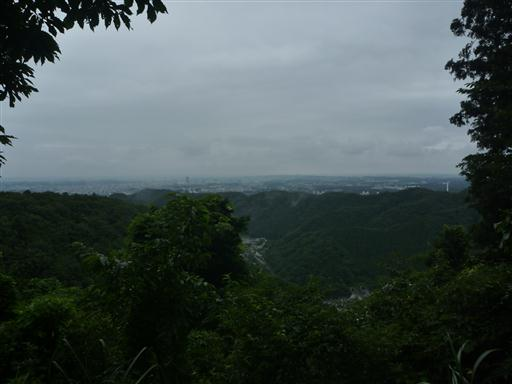
一登りで稲荷山に到着する。
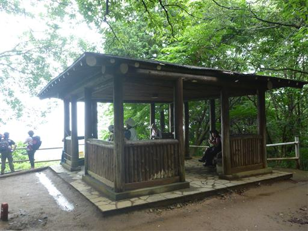
階段の木が黄色に染まっている。苔類だろうか？
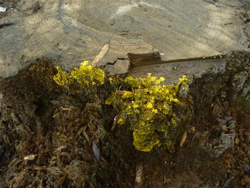
オカトラノオの花。
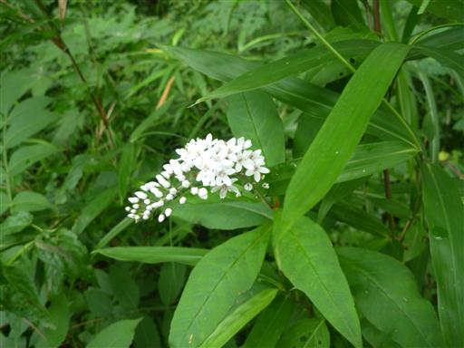
こちらはヤマホトトギス。
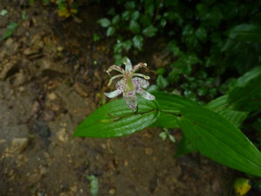
葉に小さなカタツムリがくっついている。
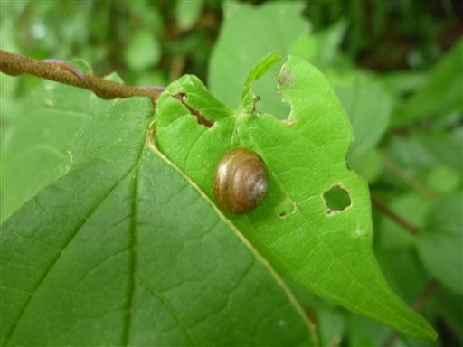
高尾山の山頂に到着する。標高599m。
久しぶりの登山だからか、思った以上に時間がかかってしまった。
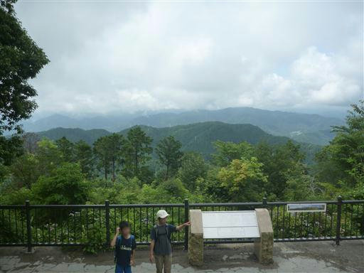
真夏の低山だが、それなりに登山者はいる。
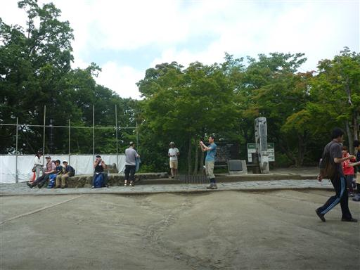
全体的にはどんよりとした天気だが、時々青空が顔を見せるようになった。
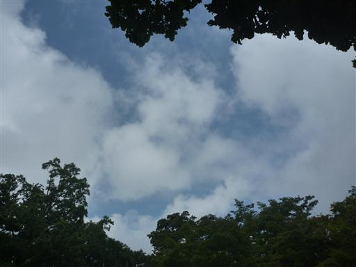
下山は久々の4号路を選択。昨年、娘と2人で歩いた道だ。
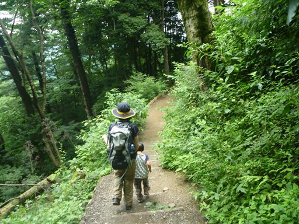
吊橋を渡る。
天気が持ちそうなため、ケーブルカーには乗らず、2号路から1号路に合流後に
琵琶滝コースに下る道を選ぶ。
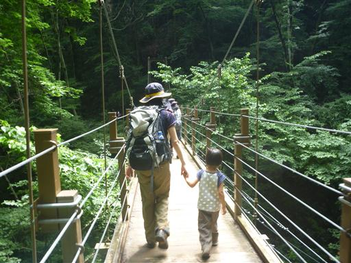
捻れている木はよく見かけるが、これだけの大木は珍しい。
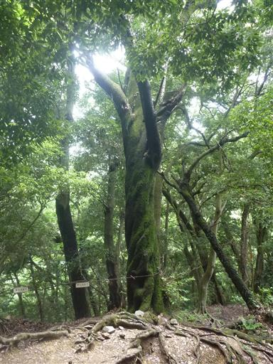
琵琶滝不動堂に到着。珍しく白装束を着て修業をしている人がいた。
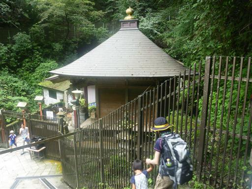
琵琶滝から6号路を下って、無事下山。
雨に降られなくてよかった。
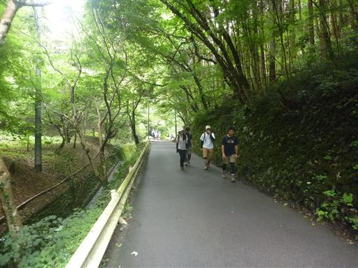
全部歩いたご褒美に、売店でソフトクリームを食べてから、帰ることにする。
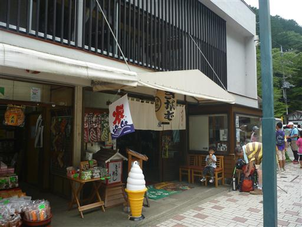
他の山行記録